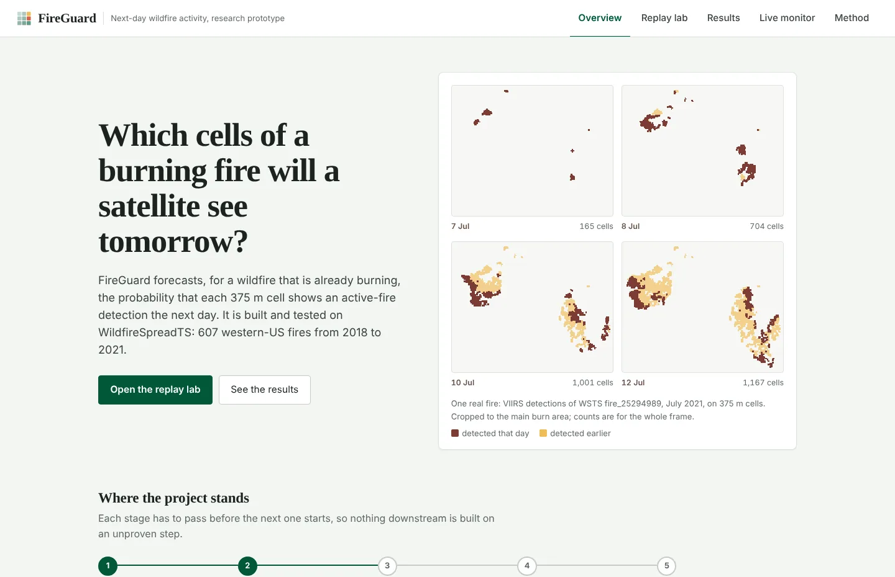
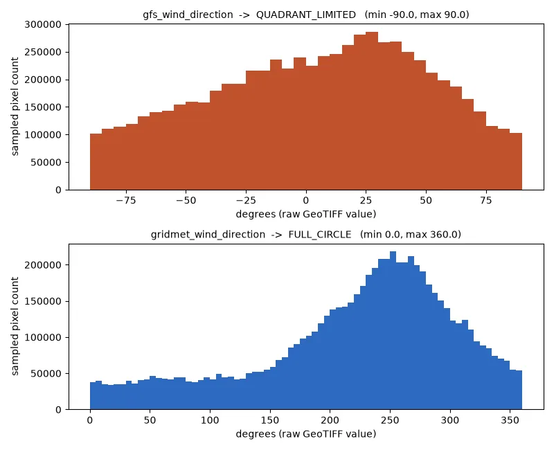
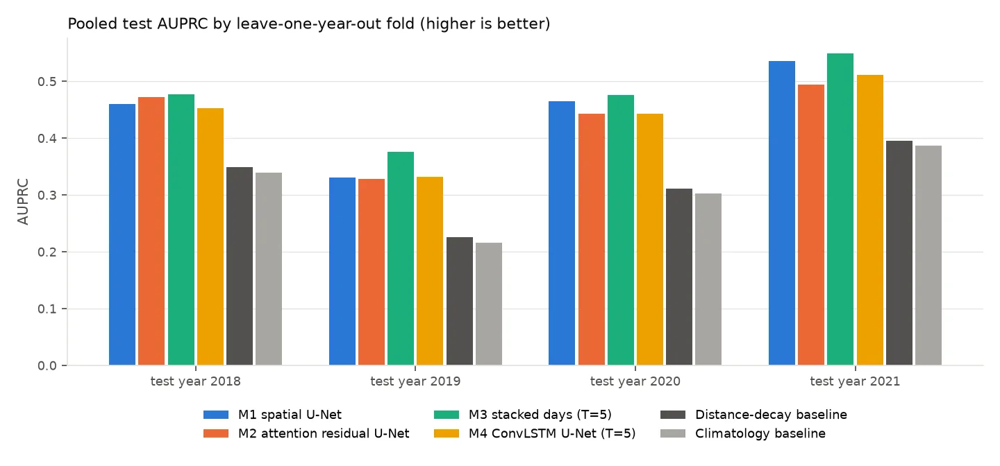
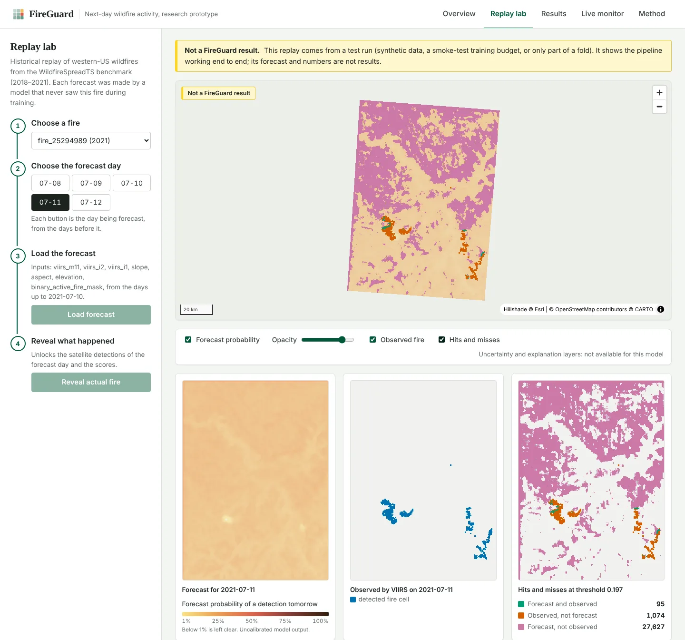

FireGuard
Next-day wildfire spread forecasting for western-US fires. Four U-Net variants, two baselines, leave-one-year-out evaluation, and a weather channel that only covered half the compass.
- Status
- Building · live forecasting next
- My role
- Temporal and weather models
- Team
- 6 people
- Data
- WildfireSpreadTS · 2018–2021
- Stack
- Python · PyTorch · U-Net · GeoTIFF
The problem
Given a wildfire that's burning today, which cells will a satellite see burning tomorrow? FireGuard answers that for western-US fires, with a probability for every 375 m cell, and lets you replay any historical fire to compare the forecast with what actually happened.

My part: weather, time, and not trusting the inputs
Six of us split the project by role. Mine was temporal and weather modelling: how several days of history and weather get into a model that otherwise sees one spatial snapshot. Before building anything on the weather channels, I checked them against the raw GeoTIFFs.

The forecast-weather (GFS) wind-direction channel turned out to be quadrant-limited, and GFS precipitation wasn't defined consistently across years. Neither would have thrown an error. A model would have trained on them happily. Both are now gated explicitly, and I wrote the temporal input contract that defines exactly which channels, days and units the models receive. I also integrated every role's branch into one prototype and ran the final M1–M4 evaluation.
Models and protocol
- M1 spatial U-Net · M2 attention residual U-Net · M3 U-Net on 5 stacked days · M4 ConvLSTM U-Net over 5 days.
- Two baselines that need no learning: distance decay from today's fire, and climatology.
- Leave-one-year-out over 2018–2021: every year is tested by a model that never saw it. The model is chosen on validation AUPRC, never on test.
- Comparisons use a paired bootstrap over fire groups, so one huge fire can't decide a result.
Results

| Held-out year | M3 stacked days | Distance decay | Test fires |
|---|---|---|---|
| 2018 | 0.478 | 0.348 | 216 |
| 2019 | 0.375 | 0.226 | 88 |
| 2020 | 0.476 | 0.311 | 173 |
| 2021 | 0.549 | 0.396 | 122 |
Raw outputs from the BCE + Dice loss rank cells well but aren't calibrated probabilities, so a Platt-scaling step fitted on validation data converts them before anything is shown as a percentage.
Errata
The temporal gain is real on one metric and unproven on the other. M3 (five stacked days) has the highest pooled test AUPRC in every year, ahead of the single-day M1 in all four. But the project's own rule for adding complexity is a paired, fire-by-fire test, and there the extra days are significantly better only in 2020, significantly worse in 2021, and indistinguishable in 2018 and 2019. The likely reading: the pooled gain comes mostly from a few large fires. So temporal context stays in the model, but it hasn't yet earned the claim that it helps in general. The ConvLSTM (M4) was significantly worse than M3 in 2019 and 2020.
Still not run: a capacity-matched control for the ConvLSTM, a 3-day vs 5-day context comparison, and a terrain ablation. 2019 is the smallest fold (88 test fires), so no single comparison there decides anything.
The replay lab

Pick a fire and a day, load the forecast, then reveal what the satellite actually saw, with hits and misses scored. Every forecast carries its provenance: model, fold, input contract, and checksums for the checkpoint and data manifests. Live next-day forecasting from current satellite data is being built into the final version.
Source
github.com/TheCodeCipher/fireguard ↗ · six-person team, roles split across data, spatial models, temporal models, evaluation, backend and frontend.